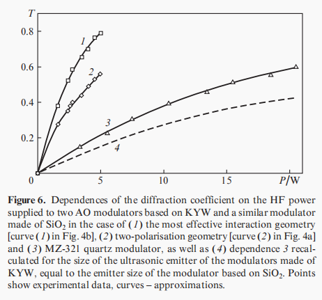
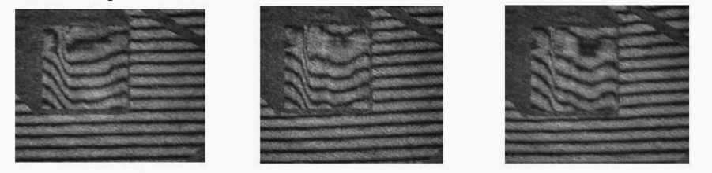
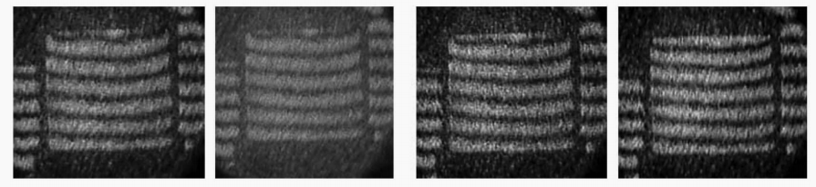

“难用的”激光调制器件
本人对激光调制器件使用的最大感受便是——难用，本文浅谈为什么会有此种感受，以及破解之道
一、总括
经过学习与在实验室里的实践之后，我得到了对于激光调制器件最直观的感受——难用，很难用。为搞清楚为什么使用起来如此困难，首先我开始反思自身能力问题。发现自身存在很严重的纸上谈兵情况，只是在课堂上学习了器件的原理，距离实际使用之间相差甚远。但另一方面，除能力有限外，激光调制器件本身也确实很难用。这里的难用是相比较于电子器件，如运算放大器等。在实验室跟随学姐做电光调Q与声光调Q的过程中，总会遇到与理论严重不符无法解释的状况，令人非常头痛。
二、分析
1. 思路梳理
在各种“高谈阔论”开始之前，有必要明确，到底什么是激光调制？课本上的定义为：
激光调制为利用激光作为载波的调制。
更直白的说，即为：对激光进行的调制。
对激光调制的研究大抵都会从分类开始，教材中给出的激光调制的分类方式如下：1
2
3
4
5
6
7
8
9
10
11
12激光调制
|---- 按位置分
| |---- 内调制
| |---- 外调制
|---- 按性质分
| |---- 模拟调制
| |---- 振幅调制
| |---- 相位调制
| |---- 频率调制
| |---- 数字调制
| |---- 脉冲调制
| |---- 脉冲编码调制
此外，我认为还可以按照调制的手段进行分类，将激光调制分为：
- 声光调制
- 电光调制
- 磁光调制
此种分类方法更着重强调调制的宏观方法，且与上述分类方法可以混用，如电光调制既可以是振幅调制，也可以是相位调制。
接下来，我便以自身的实验经历与所阅读的文献，展开讨论我对激光调制及器件的看法。
2. 与电子器件的对比
评价一个器件好不好用，我觉得需要将其放入使用的系统中进行综合考量。
评价一个激光调制器件好不好用，我觉得最好的方法是与电子器件进行对比。
首先考虑系统的搭建难度：
电子器件可以在面包板上进行操作，小巧而且不容易出现问题，器件与器件之间更是直接通过导线相连便可。反观光学系统，需要在专门的试验台上搭建系统，便捷性大大降低，而且器件与器件之间的连接需要手动准直以保证光线顺利通过。其准直步骤极其繁琐而且不易操作。我在实验室中跟随学姐进行实验前都需要花费很长时间对光具组进行准直，而且实验过程中若无意碰到或者根据需要挪动光学器件后还需重新准直，耗费大量时间精力。其次是系统设计方面的难度：
使用电子器件的某中功能时，为避免搭建系统后出错以致无法使用进而浪费时间精力的情况发生，可以在搭建系统前使用各种仿真软件进行放真，如Multisim，Proteus。在仿真软件中，可以实时看到系统的运行状态，也可以实时对系统进行相应调整，极为方便。若在仿真过程中一切顺利，则在真实系统搭建起来后也大概率不会出现问题。但反观空间光学系统，并不存在好用的仿真软件，即使可以使用Comsol进行电磁场仿真，也只是能看到大概的局部电磁场效果，Zemax也只适用于几何光学成像系统的设计。这就使得使用者只能直接进行实验，而当实验过程中无法得到自己想要的结果时也无法明确是系统设计问题还是器件或者其他地方出现了问题，使得调试过程异常复杂且具有随机性。最后也是最关键的便是器件的稳定性：
电子元器件在生产出来后其功能基本会保持稳定不变，只需按照使用说明接通特定引脚便基本可以实现其设计时的预期指标。但光学器件并不是如此，以实验室里学姐使用的声光调Q器件为例，按照理论计算，调Q后脉宽应该至少压窄到20几纳米，但实际使用时至多能压窄到80纳米左右，反复调试依然无法继续压窄，原因不明。在使用电光调Q时，更是直接与理论不符，在不加电压时居然测出旋转一周出现三个非对称的通光极大值方向。器件的实际使用不稳定性大大增加了实验的难度。
以上种种使激光调制器件的使用难度指数级倍增，极大限制了其使用与普及。
3. 原因分析
面对凡此种种，不禁会问，为什么会出现上述这些情况？
我认为：
首先是发展较晚，继第二次工业革命之后，电子器件便雨后春笋般疯狂发展，在上世纪60年代集成电路兴起后更是直接走进千家万户。广泛的应用场景带来巨大的经济效益，使相关的研究更加投入。而光电子器件则没有如此良好的发展环境。
其次是理论成熟度的差异。关于电子的理论，如电容电阻电感以及各种有关电的效应早已为人们所熟知，而光子本身就是一个比较新的概念，激光更是上个实际60年代才被发明（同时期集成电路已经开始发展），两者理论的成熟度可以说是一个处于孩童或者至多青春期，另一个早已步入成年，甚至已走向晚年。
深刻剖析一下，以声光效应为例：关于声光效应的理论其实也很成熟，但为什么使用起来确如此繁琐呢？还会出现各种出人意料的问题？我觉得根本愿意还是稳定度不够，一个声光调Q包括声光换能器，声光晶体，水冷等装置。这其中有很多不稳定因素，如声光晶体会不会受温度的影响，晶体切角是否准确，换能器调制速度是否真的和预设的一致。这些都是隐性问题且不易察觉，察觉出后也不易更正。简单的说，就是器件使用条件很苛刻。为什么使用条件这么苛刻？我觉得主要原因在于难以检测。现在多数器件都是利用晶体的各类效应。晶体是长出来的，技术要求很高，且长出的晶体并不一定完全按照预期。前几日，学姐收到一块晶体，但经测试其相位匹配角发现，晶体切角并非预期切角。同样的事情很可能发生在成品器件中，其检测困难可能导致出现品质不合格的漏网之鱼。在使用时也可能因为温度或者功率的不同导致折射率偏离预期。更不用提有时会器件会设计固定的偏振方向，实际使用时入射偏振方向差一点便会引起巨大波动。也存在晶体在使用过程中被打坏，搬运过程中受外力影响被碰坏的可能。这些不稳定因素都导致了器件的使用难度直线上升。
归纳上述分析，我认为光电子器件如此难用最主要的原因在于难以找到一个稳定的工作介质（晶体），相关理论难以详尽描述各种实际使用时出现的状况，以致工作条件苛刻，最终导致器件的使用困难。
4. 解决办法
我认为，解决问题的方向有两条：
- 一是找到稳定的工作介质
- 二是创造稳定的工作条件
关于第一个解决方向，最好的解决方式便是大力发展晶体学。这是最根本的解决方式但却不是最实际的方法。试想我们期待的完美工作介质需要具有：不受温度影响，对偏振方向不敏感，对切角不敏感，电光系数（声光系数）高…想找到这样的晶体无异于大海捞针。当然，现阶段也已经有很多相关研究。如在2017年有人提出了一种新型的KYW晶体^[1]^。此种KYW晶体具有很好的radiation resistance，经过计算，可以在特定工作角度上提高使衍射效率提高10倍左右(见下图)，进而省去了水冷系统的限制，拓展了使用场景。这样的对于晶体本身性能的改进会是一个循序渐进的过程，仍需要倾注大量人力物力。

新型KYW晶体制作的声光调制器与原始器件的对比
关于第二个解决方向也已经有很多相关研究。如通过使用两块取向相互垂直的KTP晶体消除梯度热场中热效应带来的折射率波动，使电光调制更加稳定，进而提升调制效率^[2]^。原本的衍射图像与经过重新系统设计后的衍射图像对比如下图所示，可以明显看出条纹的波动被消除。此类解决方案更多是对现有介质进行优化设计，通过系统结构的改进来增加稳定性。总体来说，成本较低，见效较快，是现阶段在晶体没有突破性进展之前应着重发展的方向。

原本的衍射图像

新系统的衍射图像
综合上述分析，或许真正的破局之道在于一边寻找晶体的突破以治本，一边寻找优化结构的方法解决燃眉之急。当工作介质晶体也像电子的常用基底——硅，一样稳定时，便是激光调制器件真正成熟之日。
三、总结
本文站在使用者的视角，分析了激光调制器件难用的原因。并得出结论，即根本原因在于器件的稳定性差。接着对稳定性差的问题进行分析，提出两种解决方向，并结合现有文献对两个发展方向进行了分析与评价。最后对激光调制器件的发展进行展望，期待其和电子原件可同样稳定好用的一天的到来。
本人见识有限才疏学浅，以上分析全部建立于现有知识的基础之上，如有不当请斧正。
参考文献：
[1] Acousto-optic modulators based on a KYW crystal
[2] Electro-optical modulators based on KTP crystalsfor high-power lasers in the mid-IR region